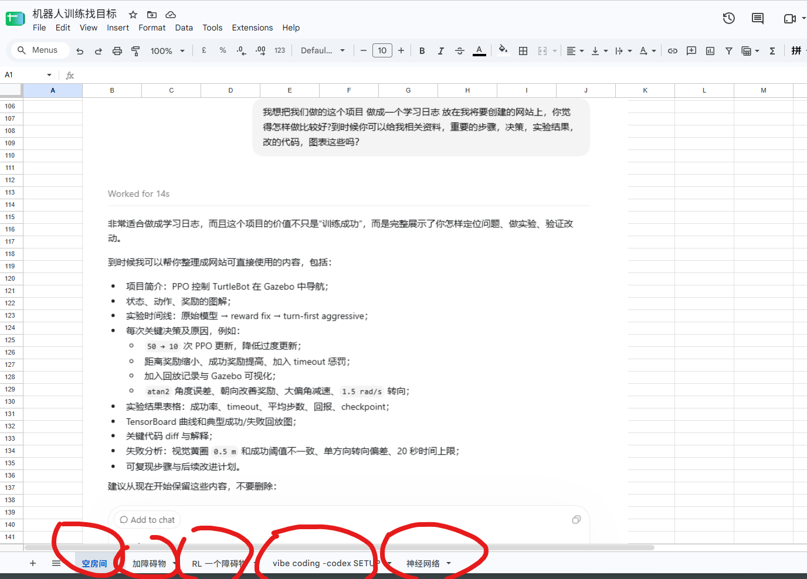
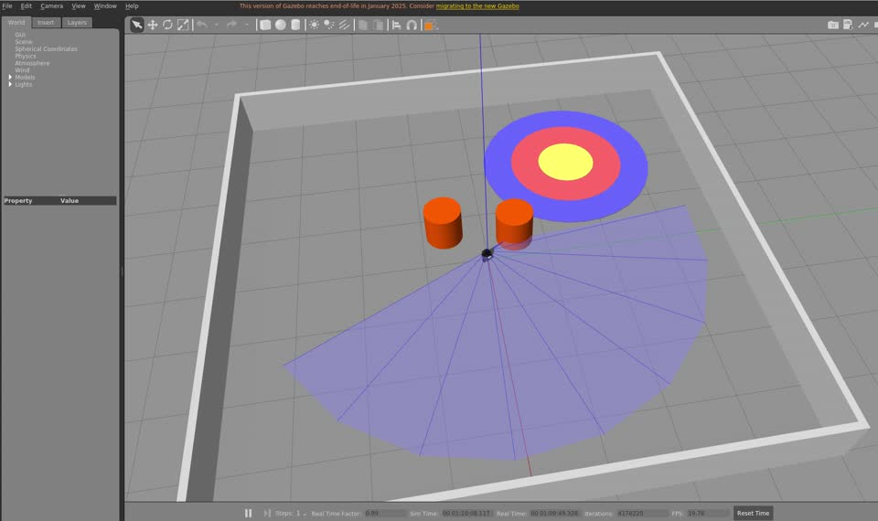

CASE FILE 001 · NAVBOT
从撞向柱子，
到学会绕过去。
一个为补上 Robot Learning 真实闭环而开始的项目，后来成长为一套包含可复现场景、行为克隆、PPO、安全层、镜像协议与 OOD 诊断的移动机器人实验系统。

00 / MY ROBOT TRAINING DESK
第一次看这个项目，先认识我每天切换的六个界面。
这不是一套全自动的“AI 替我训练机器人”。人的工作是定方向、写验收标准、看行为和判断证据；Agent 缩短实现与运行的反馈循环，Gazebo 和 TensorBoard 则分别回答“机器人做了什么”和“训练内部发生了什么”。

掌握方向盘
在 Windows 端讨论 high-level plan、实验规格、失败解释和 next step；重要问答与截图随手放入 Google Sheet，成为项目的原始实验账本。

真正执行训练的工作间
ROS、Gazebo、Python 环境、项目源码与训练命令运行在 Ubuntu 环境中。每次启动都会留下配置、checkpoint、CSV 与 TensorBoard event。

看机器人到底做了什么
场景、机器人、LiDAR、目标和障碍物都在这里变成可观察行为：直线是否漂移、是否撞柱、在哪里犹豫、左右镜像是否一致。

把规格变成代码与实验
Codex Agent 接入同一个 WSL 项目，修改代码、运行 smoke test、收集日志并返回证据；我负责判断结果是否可信，以及下一轮该改什么。
跑训练，也要回看行为
先 smoke test，再扩大到 1k、5k、10k、20k；训练后冻结 policy，在 baseline、镜像、随机障碍和 OOD 场景盲跑。录像以 4× 展示，便于快速对比路线、碰撞与 timeout。

看数据，但不被曲线骗
同时观察 success、collision、timeout、return、episode length、KL、clip fraction、Actor/Critic loss 与参数更新量。曲线稳定只说明优化在运行，不能代替 Gazebo 行为验收。
这六个界面构成一条可重复的 Vibe Robotics 循环：提出问题 → 写规格 → Agent 实现 → Gazebo 运行 → 录像与 TensorBoard 取证 → 人做下一轮判断。
00 / WHY THIS PROJECT
它不是为了证明机器人能从 A 点走到 B 点。
真正的目标，是第一次亲手走完一条 Robot RL 链路：机器人观察环境，策略产生动作，环境返回奖励，轨迹被收集，PPO 更新策略，然后再用冻结场景判断它究竟学会了什么。
我原本的能力来自 Houdini、VFX、procedural simulation、USD 与 production pipeline。NavBot 是一座桥，把这些“创造和调试数字世界”的经验，接到 observation、action、reward、policy、rollout 与 evaluation 上。项目采用移动机器人，是因为它足够直观：LiDAR 能看见什么、轮子执行什么、碰撞为什么发生，都可以被观察和解释。
01 / THE LOOP
先把学习闭环看清楚。
基础 Rule Controller 只负责朝目标前进；PPO 不接管全部导航，而是输出小幅 Δv 与 Δω。没有障碍时 correction 接近零，遇到障碍时减速、转向，绕过后再把控制权还给目标控制器。
如果规则控制器已经会完整避障，PPO 的贡献就很难看见。让 Rule 只知道“去哪里”，才能清楚验证 PPO 是否真的从传感器中学会“怎么绕过去”。
02 / TWO EXPERIMENT LINES
同一个问题，走出了两条路线。
LINE A · RESIDUAL LEARNING
保留会朝目标走的控制器，只让 PPO 学避障修正。
- 16 维观察，动作是有界的速度修正
- 从固定单柱开始，再逐步加入扰动与 OOD
- 重点研究失败机制、镜像偏差和安全边界
LINE B · CLEAN START
不继承旧权重，从时序 LiDAR 与严格镜像 Actor 重新开始。
- 78 维观察：当前 LiDAR、变化率、动作历史与目标几何
- 1–5 柱在线随机场景与可行路径检查
- 行为克隆打底，再用 PPO 修正复杂失败
03 / WORKFLOW PIVOT
真正的加速，来自重新分配工作。
项目早期依靠对话、复制代码、粘贴截图和手动执行。信息虽然完整，但每次迭代都要跨窗口搬运上下文，反馈回路很长。后来把执行 Agent 放进 WSL Ubuntu，工作方式发生了根本变化。
对话 → 复制 → 粘贴 → 执行 → 截图 → 再解释
ChatGPT 能参与分析，但看不到真实工程环境。代码和日志要由人手动来回传递，调试常常消耗在上下文搬运，而不是实验本身。
规划与执行分层，人在回路中掌握方向。
Windows 端负责高层计划、规格、实验分析与 next step；WSL Ubuntu 中的 Codex Agent 直接读取工程、修改代码、执行命令和检查结果。
效率提升并不是因为把项目“交给 AI”。相反，你把自己的角色提升到系统负责人：定义问题、冻结基线、决定实验是否通过、拒绝不可靠结论；Agent 则把代码修改和实验执行压缩成更短的反馈循环。
04 / STARTING OVER
最重要的一次迭代，是把之前的路全部推倒。
项目早期没有先建立高层实验计划。单边路线一旦走通，就直接进入 RL；没有 mirror 成对的基础行驶数据，也没有冻结的验收协议。结果不好时，第一反应是继续改训练、加条件、加几何寻路和数学规则，系统却越来越难解释。
为了训练更快，我先把机器人开得太快。
早期把巡航指令一度提高到约 0.80 m/s。画面里机器人确实更快，但长期训练数据变差。回到空场做直线标定后才发现：到 0.30 m/s 时，横向与朝向偏移已经不可接受；最终退回并冻结在 0.25 m/s，重复测试才达到可用于训练的稳定程度。
ROBOTIS 为 TurtleBot3 Burger 标称的最大平移速度约为 0.22 m/s。这个实验不能单独证明问题来自实体 actuator；差速驱动、轮地摩擦与打滑、控制频率、加速度和 Gazebo 模型都可能参与。但它证明了一件事：如果训练命令超出原机器人和仿真模型的可信物理包线，RL 会把大量时间花在适应伪影，而不是学习任务。
ROBOTIS TurtleBot3 官方规格 ↗单边成功，被误当成了可学习的基础。
- 只验证一个方向能到达终点
- 没有左右 mirror 成对数据
- 直接让 RL 接管并期待它自动修正
- 结果异常后继续叠加 reward、条件和路径算法
- 系统越来越复杂，失败原因越来越难分辨
先证明任务与数据闭环，再允许学习介入。
- 从控制器与场景生成重新设计
- 所有基础路线同时生成左右 mirror
- 在没有 RL 时验证 1、2、3、4、5 柱均能完成
- 冻结成功轨迹、seed、场景合法性和安全阈值
- 先 BC 预训练，再做冻结推理与 PPO 微调
把学习修正设为零，确认 residual 接口不会改变原始 baseline。
冻结 policy、关闭探索、不做 optimizer update，只检查它已经学到的行为。
让冻结 policy 进入训练时未见过的新场景，检验迁移与泛化，而不是继续训练。
TensorBoard 也在这个阶段进入工作流：不再只看 Gazebo 里“小车好像会走了”，而是把 reward、episode length、success、collision、timeout、critic loss、KL 与 checkpoint 放在一起比较。随后再让生成的 policy 盲跑固定 baseline 和随机障碍环境，由 AI 协助汇总轨迹与指标，最后写成实验报告。整个实验路线、参数试验、记录与判断，都是你一轮一轮亲手推进出来的。
05 / EVIDENCE NOTEBOOK
这五个 Google Sheet tab，是项目的原始实验账本。
它们不是事后写出的成功故事，而是一边做、一边截图、一边记录对话和命令留下的过程证据。早期的低成功率、失败的控制器、观察空间争论、工程迁移和后来的实验纪律都被保留下来。
先学会直走，也先暴露训练不稳定。
8 / 54stage1_timepenalty_5k 的完整记录显示成功率仅 14.8%。相邻训练快照甚至从 50% success 变成 0%，说明单看某一轮 reward 很容易误判。
主动制造一个必然失败的对照组。
0 / 20中央圆柱与双柱强制绕行场景中，Direct Controller 20 次全部碰撞、0 timeout，多数在 12–22 步撞柱。PPO 因此得到一个明确、可证伪的任务。
查看障碍物基线 → 03 · RL 一个障碍物保护基线，再让学习只承担新增能力。
10 / 10验证过的 direct_goal_v1_heading_comp_v1 被单独冻结；新实验只输出有界 residual correction。零 residual 必须精确复现原始直行基线。
人的方向盘，接上 Agent 的执行循环。
WIN → WSLWindows 端负责高层规划、spec、分析和 next step；WSL Codex Agent 直接修改共享项目，再挂载进 Docker 执行 ROS / Gazebo，减少反复复制命令和补丁。
查看 Agent 工作流 → 05 · 神经网络维度不是越多越好，关键是任务所需信息是否完整。
16DLiDAR 摘要、目标相对几何和上一动作组成早期观察。记录随后进一步定义 seed 61129、50/50 在线场景生成、12 个永久 OOD 题和几何泄漏排除。
查看网络、指标与设置 →两类场景按回合严格交替生成，不把验证题混回训练。
柱子 x ≤ 0.08 m、柱子 y ≤ 0.06 m、目标 y ≤ 0.06 m、初始 yaw ≤ 4° 时拒绝近似重复样本。
静态检查与单元测试通过；固定 seed 下 100 个场景完全复现。
这批记录改变了项目的叙述方式：真正有价值的不只是最后的 29/30，而是能够回答“当时为什么这样改、改之前失败成什么样、下一步凭什么成立”。Google Sheet 因此被视为实验原始档案；网站只做归纳，不把不同阶段的数据混成一条漂亮曲线。
录像把数据重新放回机器人行为里。
以下短片由原始屏幕录像加速压缩而成，并非实时速度。蓝紫色扇区是 LiDAR 可视化，彩色圆环是目标区域，橙色圆柱是障碍物。每段卡片均标明实际播放倍率。
06 / BUILD LOG
项目不是一条漂亮的上升曲线。
每一步都先提出一个可证伪的问题，再决定是否允许进入下一阶段。
- 01CONTROL BASELINE
先保护一个真的能工作的基线
无障碍 Direct Goal + heading compensation 在重启后验证为 10/10 成功、0 碰撞、0 超时，平均 71.5 步。它被冻结，后续实验不得覆盖。
- 02FIXED FAILURE
让失败变得清楚：机器人必须撞上正中的柱子
起点 (0,0)、柱子 (1,0)、目标 (2,0)。纯 Goal-Seeking 沿中心线前进，并在 LiDAR 低于 0.20 m 时终止。这个场景证明“只朝目标走”必然失败，也给 PPO 一个明确任务。
- 03RESIDUAL PPO V1–V3
连通动作接口，不等于学会避障
Residual action 被限制在 ±0.05 m/s 与 ±0.30 rad/s，零 residual 精确复现基线。5k 训练后的首个 checkpoint 仍是 0/10 成功、10/10 碰撞。随后控制门证明至少一个转向方向在物理上可绕过柱子，但早期策略学到的正确方向幅度太弱。
- 04BEHAVIOR CLONING + PPO
先给策略一个成功动作的锚点
3 条固定场景专家轨迹生成 648 个样本；BC Actor 在 Gazebo 中 3/3 成功。以 BC 初始化的 PPO 微调收集 5,299 步，训练回合 24/24 成功；最终固定场景评估 10/10 成功。
- 05HELD-OUT & CURRICULUM
固定场景成功，不代表泛化成立
六个未参与训练的小扰动场景中，V4 达到 59/60 成功。V5 加入柱子横向课程后仍为 59/60，只是失败从 pillar-right 转移到 yaw-left：总体可靠性没有真正提高。
- 06ADVERSARIAL OOD
更难的考试揭开了真正边界
12 个永久 OOD 任务、每个 5 次确定性执行：V5 为 43/60 成功，11 次碰撞、6 次超时。成功率 71.67%，说明小扰动上的 98.33% 不能代表更广泛的泛化。
- 07MIRROR CONSISTENCY V7
更对称的输出，反而更差的机器人
镜像一致性损失从 3.20 降至 0.19，但永久 OOD 成功率降到 38.33%，碰撞升至 48.33%。原因不是“对称性无用”，而是仅约束输出对称，没有提供正确安全动作的锚点，并且成对轨迹没有被严格执行。
- 08V8 + CLEAN START
从成功的左右成对轨迹重新构造问题
V8 收集 24 对镜像成功路线、48 个回合、5,617 个 16 维样本；后续 clean-start 路线升级为 360° dense LiDAR 与 78 维时序观察，并从随机权重重新训练，不再依赖旧 Actor。
07 / CLEAN-START RESULT
最后留下的，不只是一个成功率。
PPO 把两个复杂四柱超时转成 160/161 步成功，同时没有增加超时。但 BC 与 PPO 都在同一个五柱镜像场景触发 0.20 m 安全阈值。这是当前最重要的未解决问题：性能提高了，安全失败并没有被完全消除。

从 Gazebo 中的学习与诊断，到 Blender 中可展示、可复用的数字场景，NavBot 也成为 SimForge Agent 的第一个真实机器人资产来源。
08 / WHAT I LEARNED
真正困难的是定义证据。
训练成功 ≠ 泛化成功
固定场景、轻微扰动与 adversarial OOD 必须分开报告。59/60 的 held-out 成绩与 43/60 的 OOD 成绩同时成立。
失败需要轨迹，而不只是标签
超时可能是没前进，也可能是接近目标后擦边离开。逐步记录 goal angle、速度、gate 状态和 LiDAR 才能区分机制。
对称约束需要正确动作锚点
让左右输出更一致并不自动等于更安全。没有成对成功轨迹，对称损失甚至会破坏原本有用的一侧行为。
仿真基础设施也是研究对象
目标模型缓存、跨进程柱子残留、gzclient 与 gzserver 不一致，都可能伪造训练信号。重置协议与服务端验证不是“杂活”。
10 / WHERE IT GOES NEXT
把学习闭环接到更大的机器人宇宙。
下一步不是盲目延长训练，而是先复盘重复安全失败，再把 Houdini / Blender 的程序化环境、USD 资产组织、传感器模拟与批量评估接进同一个可审计管线。AI Agent 可以帮助生成与整理资产，但实验协议、证据边界和最终判断仍必须由人负责。
整理依据：三份 NavBot/PPO 项目存档（2026-09）及 WSL 项目中的实验 README、冻结评估结果与最终报告。数字均按其原始实验语境呈现，不混用训练统计、held-out 与 OOD 结果。